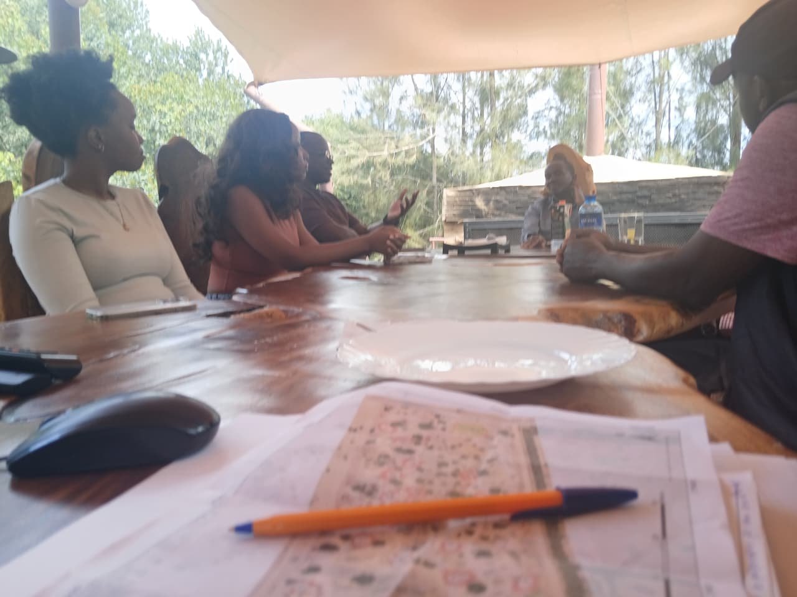
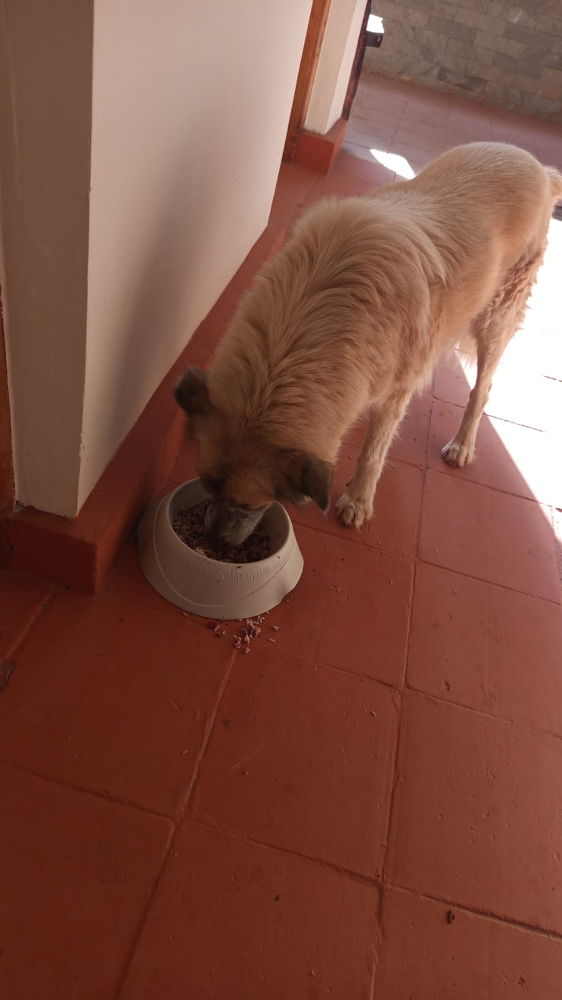

Mucheru World of Golf
Field civil works, putting green foundation stabilization, earthmoving alignment pegging, and primary irrigation trenching advanced systematically across Mucheru World of Golf under the active supervision of Mr. Gichuhi and Ken:
- Application of Volcanic Pumice on Greens No. 1, 2, 3, 4 & 9: Ground labor personnel utilized wheelbarrows, shovels, and leveling rakes to haul, distribute, and grade uniform layers of porous volcanic pumice aggregate over the compacted hardcore stone beds across Greens 1, 2, 3, 4, and 9. This specialized aggregate layer establishes the essential intermediate drainage and aeration transition profile directly beneath the upcoming rootzone loam, preventing fine particle migration while ensuring rapid sub-surface water percolation.
- Manual Breaking & Fracturing of Hardcore Rocks on Green No. 10: Labor crews equipped with heavy steel sledgehammers worked inside the geotextile-lined foundation basin of Green 10, manually fracturing and shattering oversized hardcore stones. This in-situ rock breaking reduces boulders into interlocking, compact stone aggregates, eliminating large voids and preparing the sub-base for subsequent pumice application.
- Digging of Utility Trenches for Main Irrigation Piping: Dedicated trenching crews manually excavated continuous linear utility trenches running parallel to the course's perimeter post-and-wire boundary fence. Cut to precise depth and uniform grade alongside the stone drainage culvert, these trenches are engineered to house the course's subterranean main irrigation water distribution pipes.
- Pegging of Dam Walls for Civil Earthmoving & Excavation: Technical survey and field alignment teams established perimeter reference pegs along the dam wall corridors. Pegging the dam wall crests, batter slopes, and containment embankment boundaries provides precise geometric and elevation control for ongoing and upcoming heavy earthmoving machinery.
Key Accomplishments — Mucheru World of Golf
Pumice aggregate successfully spread and graded across putting Greens 1, 2, 3, 4 & 9; manual sledgehammer fracturing of hardcore rocks completed on Green 10 foundation; linear perimeter utility trenches excavated for irrigation water piping; and dam wall embankments and batter slopes accurately pegged for excavation.
Field operations video documenting September 11 progress at Mucheru World of Golf, capturing putting green construction, pumice distribution, rock breaking, and perimeter piping trench excavation:
🎥 Mucheru World of Golf — Daily Operations & Course Progress
Comprehensive field progress video documenting September 11 operations at Mucheru World of Golf, highlighting putting green foundation earthworks, pumice spreading, hardcore breaking, and perimeter irrigation trenching.
Audiovisual Verification Highlights
Audiovisual documentation confirms active manual labor teams distributing pumice aggregate, sledgehammer stone breaking, and continuous pipeline trenching along the course boundary at Mucheru World of Golf.
Field photographic evidence sequentially documenting pumice application across green foundations, manual rock breaking on Green 10, and linear piping trench excavation:

Putting Green Bed — Pumice Haulage & Spreading
Ground crew utilizing wheelbarrows and shovels to distribute porous volcanic pumice aggregate across the lined hardcore stone bed surrounded by red soil berms.

Green Foundation — Field Crew Pumice Distribution
Wide perspective showing labor personnel loading volcanic pumice from material heaps and systematically grading a uniform aggregate layer across the green sub-base.

Putting Green Basin — Leveled Pumice Sub-Base
Completed putting green basin displaying a clean, smoothly leveled bed of volcanic pumice aggregate contained within the membrane liner and red soil perimeter embankment.

Green Complex — Progressive Aggregate Layering
Putting green foundation showing progressive pumice placement over the fractured hardcore base, with utility wheelbarrow and drainage piping positioned along the collar.

Green No. 10 — Sledgehammer Hardcore Rock Fracturing
Labor personnel on Green 10 swinging a heavy steel sledgehammer to manually crush and fracture large hardcore stones into uniform interlocking aggregate.

Green No. 10 — Sub-Base Stone Shattering & Compaction
In-situ rock breaking operations continuing on Green 10 to eliminate foundation voids and create a dense, stable stone layer prior to subsequent pumice application.

Irrigation Infrastructure — Perimeter Pipeline Trenching
Neatly excavated linear utility trench running parallel to the perimeter post-and-wire boundary fence and stone drainage culvert for main water pipe installation.

Aerial Overview — Pumice Application on Putting Green
Elevated drone perspective capturing a completed putting green basin with a uniformly leveled volcanic pumice aggregate layer contained within the red soil embankment perimeter, with a visible hardcore rock band across the centre.

Aerial Panorama — Dual Putting Greens with Pumice Sub-Base
Wide-angle drone panorama revealing two putting green basins with completed pumice aggregate layers, situated adjacent to the perimeter access road and boundary fence posts along the course corridor.

Aerial View — Completed Pumice Layer with Surrounding Terrain
Elevated aerial perspective of a putting green displaying a clean, finished pumice aggregate sub-base, flanked by the perimeter road, natural tree canopy, and stockpiled rock material along the boundary.
Putting Green Sub-Base Engineering Standards
The combination of fractured hardcore rock foundations, impermeable containment liners, and leveled porous volcanic pumice aggregates establishes high drainage efficiency and rootzone aeration essential for championship-quality putting green turf.
Chaka Farms
Executive master planning consultations, agricultural farmland soil preparation, quantitative livestock dairy production, specialized working dog training routines, and farmstead grounds care were executed across Chaka Farms:
- Executive Strategic Meeting at Guest House Boardroom: A high-level consultative conference was convened in the Chaka Farms guest house boardroom. The session brought together Mr. Joe Mucheru (Boss), Mr. George from Farmyard, and Architect Antony to review comprehensive master planning drawings, infrastructure zoning, operational coordination, and landscape development strategies.
- Farmland Tractor Ploughing Operations (Overseen by Kinoti): Agricultural tractor ploughing was actively conducted across the farm acreage under the on-site supervision of Kinoti. Equipped with a heavy-duty multi-disc plough, the tractor systematically tilled, turned, and aerated the deep brown loam soil along the tree-lined boundary plots, preparing clean seedbeds for upcoming seasonal crop planting.
- Dairy Cow Milking Production (Kamandau): Milking operations yielded a total gross production of 6.0 Litres, strictly recorded in Litres, with 3.5L collected in the morning session and 2.5L collected in the evening session.
- Reconciliation of Milk Allocations & Farm Reserve: Authorized disbursements drawn out of the gross milk yield totaled 2.0 Litres, comprising 1.0 Litre for goat kids (0.5L morning + 0.5L evening), 0.5 Litres allocated to Maasai, and 0.5 Litres allocated to Gladys. The resulting net remaining farm milk reserve stood at 4.0 Litres.
- Canine Unit Pasture Socialization & Training Overview (Willy): Working dogs Mali, Bella, and Zara completed morning off-leash goat flock socialization, transitioned to the island under Rubi's care in the afternoon, and practiced "Paw" command manners.
- Estate Compound Cleanliness & Maintenance (Margaret & Monica): Grounds personnel performed daily sweeping, litter gathering, and routine facility grounds upkeep throughout the farm compound.
Key Accomplishments — Chaka Farms
High-level strategic master planning meeting held at the guest house boardroom with Mr. Joe Mucheru, Mr. George (Farmyard) and Architect Antony; agricultural tractor ploughing actively executed across farmland acreage under Kinoti's supervision; gross dairy milking yield recorded at 6.0L with 4.0L preserved in net farm reserve; working dogs socialized with grazing goats and exercised on the island; and compound cleanliness maintained.
Quantitative daily milk production log recorded strictly in Litres (L). Allocations to goat kids and staff represent disbursements drawn out of total gross yield:
| Item / Description | Morning (L) | Evening (L) | Total (L) | Deduction (L) | Farm Balance (L) |
|---|---|---|---|---|---|
| Cow Milking Yield (Gross Production) | 3.5 L | 2.5 L | 6.0 L | — | 6.0 L |
| Goat Kids Ration | 0.5 L | 0.5 L | 1.0 L | - 1.0 L | — |
| Staff Allocation — Maasai | — | — | 0.5 L | - 0.5 L | — |
| Staff Allocation — Gladys | — | — | 0.5 L | - 0.5 L | — |
| Net Farm Milk Balance | 3.5 L Morning | 2.5 L Evening | 6.0 L Gross | - 2.0 L Total Deductions | 4.0 L Net |
Production & Allocation Reconciliation
Total gross milk production stood firmly at 6.0 Litres (3.5L morning + 2.5L evening). Following authorized disbursements of 1.0 Litre to goat kids (0.5L morning + 0.5L evening), 0.5 Litres to Maasai, and 0.5 Litres to Gladys, total deductions equaled 2.0 Litres, preserving an exact net remaining farm balance of 4.0 Litres.
Disciplined working canine training, livestock socialization, facility hygiene, and grounds maintenance were executed systematically under dedicated supervisory oversight:
- Morning Livestock Socialization with Goat Flock: Handler Willy guided Mali, Bella, and Zara into the farm pastures during morning goat grazing, reinforcing off-leash composure, pack discipline, and peaceful cohabitation around livestock.
- Afternoon Island Socialization with Rubi: During the afternoon session, the dogs were deployed with Rubi to the island sector for varied environmental exposure and exercise.
- Paw Command Conditioning & Manners Drills: Structured tactile conditioning reinforcing the "Paw" cue was conducted to heighten responsiveness and canine-handler bonding.
- Kennel Sanitation & Hygiene Standards: Complete scrubbing, chemical disinfection, and washdown of all kennel resting stalls were completed to uphold superior sanitary standards.
- Estate Compound Upkeep (Margaret & Monica): Grounds personnel Margaret and Monica maintained pristine cleanliness across paved pathways, compound lawns, and farmstead perimeters.
Canine Routine & Grounds Upkeep Verification
Canine pack conditioning successfully executed across both morning flock socialization and afternoon island exposure; kennel biosecurity verified; and farm compound cleanliness maintained throughout the day.
Field photographic evidence documenting executive master planning sessions and agricultural farmland ploughing operations at Chaka Farms:

Guest House Boardroom — Master Planning Session with Architect Antony
Mr. Joe Mucheru (Boss) convening an executive master planning conference in the guest house boardroom alongside Mr. George (Farmyard) and Architect Antony, with architectural layouts and site plans under active discussion.

Farmland Acreage — Tractor Ploughing Overseen by Kinoti
Agricultural tractor equipped with a heavy-duty disc plow tilling and turning the rich brown soil along the tree-lined boundary at Chaka Farms, actively overseen on site by Kinoti.
Agricultural & Planning Coordination
Strategic architectural alignment between estate leadership and Architect Antony coincides with active agricultural soil preparation, ensuring synchronized progression of physical farming and master-planned estate enhancements.
Kabete Residence
Major civil excavation, terrace demolition, eucalyptus root severance, and electrical cable route clearance advanced at Kabete Residence, with operations overseen and field updates shared by Njoki:
- Clearance & Demolition at Fireplace Ground Level: Ground labor personnel in high-visibility safety vests utilized mattocks, shovels, and buckets to clear accumulated soil, masonry rubble, and debris from the lower terrace floor of the outdoor fireplace.
- Cutting & Severing Roots from Nearby Eucalyptus Tree: Workers deployed axes and heavy cutting tools to chop back and sever thick invasive root networks originating from an adjacent mature eucalyptus tree, eliminating subterranean root encroachment along the red-soil embankment.
- Expansion & Widening of Ground Level Footprint: Cautious manual excavation was conducted into the red subsoil bank adjacent to the stone retaining wall, substantially expanding the usable foundation footprint and level surface area for the outdoor fireplace structure.
- Three-Phase Power Cable Corridor — Follow-Up Status Documentation: Three heavy armored three-phase electrical power cables running from the upper slope toward the cold room were first discovered approximately three days ago during initial ground level expansion works. Today's site visit documented the current condition of the exposed cable corridor, confirming the cables remain intact and undamaged within the excavated red soil embankment.
- Domestic Resident Pet Care Routine: Regular daily feeding and attentive care routines were maintained for the resident pets: Ajabu the Golden Retriever received his nutritious meal in the veranda corridor, and resident cats (Mocha, Aiko & Reo) enjoyed their routine feeding together peacefully from dedicated stainless steel bowls.
Key Accomplishments — Kabete Residence
Ground level of outdoor fireplace expanded and cleared of demolition rubble; encroaching eucalyptus tree roots chopped and severed; three-phase power cable corridor (discovered three days ago) visually inspected and confirmed intact; and full domestic pet care maintained for Ajabu and resident cats (Mocha, Aiko & Reo).
Follow-up status documentation on the three-phase electrical transmission conduits first exposed during ground expansion works approximately three days ago:
Cable Corridor Status — Visual Condition Assessment
The three heavy armored three-phase electrical power cables traversing from the upper slope toward the cold room — originally discovered and exposed three days ago — were visually inspected today. The cables remain intact and undamaged within the excavated red soil embankment. Manual excavation protocols around the cable corridor continue to be strictly enforced, with all heavy pickaxe and mechanical digging prohibited within the cable alignment zone.
Protective Infrastructure Protocol (Ongoing)
The three-phase cable alignment will be surveyed, charted on site layout documentation, and provided with sand cushioning and reinforced protective cable warning slabs prior to subsequent masonry and backfilling works.
Field photographic evidence sequentially documenting fireplace ground clearance, eucalyptus root cutting, ground expansion, electrical cable protection, and domestic pet care:

Outdoor Fireplace — Ground Level Clearance & Demolition
High-angle view of ground personnel in safety vests utilizing shovels, buckets, and hand tools to excavate red soil and clear masonry rubble at the base of the outdoor fireplace terrace.

Embankment Clearance — Eucalyptus Root Severance
Field laborer utilizing a heavy axe to chop through dense, thick subterranean roots originating from an adjacent eucalyptus tree encroaching on the steep red clay excavation bank.

Retaining Wall Terrace — Ground Level Footprint Expansion
Excavation crew cutting back into the compacted red clay bank below the stone masonry wall and perimeter railing, systematically widening the foundation footprint of the lower terrace.

Subterranean Utilities — Three-Phase Cables to Cold Room
Carefully exposed alignment of three heavy armored three-phase electrical power cables traversing along the red soil slope from the upper property perimeter towards the cold room.

Resident Pet Care — Ajabu Mealtime Routine
Ajabu the Golden Retriever enjoying his daily nutritional meal from his feeding bowl along the shaded tiled veranda walkway at Kabete Residence.

Resident Pet Care — Mocha, Aiko & Reo Dining Routine
Resident feline trio Mocha, Aiko, and Reo feeding peacefully side by side from individual stainless steel bowls on the tiled residential terrace.
Amani Cottage
Comprehensive landscape irrigation, garden horticulture, grounds sweeping, and thorough residential interior housekeeping were carried out at Amani Cottage:
- Rotary Sprinkler Lawn Irrigation (Edwin): Active landscape irrigation was deployed across the expansive front lawn turf using rotary water sprinklers, ensuring deep hydration and maintaining vibrant green lawn vitality.
- Perimeter Flower Bed & Ornamental Shrub Watering: Systematic hand-watering was administered to landscaped flower beds, ornamental shrubs, and flowering borders surrounding the cottage pathways.
- Lawn Sweeping & Debris Removal (Edwin): Grounds personnel thoroughly raked and swept the manicured lawn surfaces and stone garden pathways, collecting fallen leaves, twigs, and organic litter to maintain an immaculate landscape presentation.
- Comprehensive Whole-House Interior Dusting: Complete interior housekeeping and dusting were performed throughout the entire residence, meticulously wiping down timber furnishings, living room consoles, cabinetry, high surfaces, and bedrooms across the property.
Key Accomplishments — Amani Cottage
Front lawn turf irrigated with rotary sprinklers; perimeter flower beds and ornamental plantings thoroughly watered; front lawn and stone pathways swept and cleared of litter; and comprehensive whole-house interior dusting and cleaning completed.